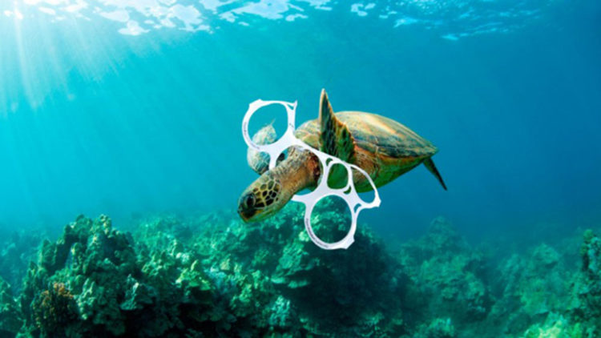

Bienvenido a Océanos Vivos
Océanos Vivos es una asociación sin ánimo de lucro dedicada a proteger los ecosistemas marinos, combatir la contaminación plástica y promover la pesca sostenible a nivel local e internacional.
Nuestra Causa: ODS 14 - Vida Submarina
El Objetivo de Desarrollo Sostenible 14 de las Naciones Unidas busca conservar y utilizar sosteniblemente los océanos, los mares y los recursos marinos. Los océanos mueven sistemas mundiales que hacen que la Tierra sea habitable para la humanidad. Protegerlos es vital para nuestro futuro.

Información de la campaña
| Aspecto | Información |
|---|---|
| Asociación | Océanos Vivos, organización sin ánimo de lucro. |
| Objetivo | ODS 14: conservar y utilizar sosteniblemente los océanos, los mares y los recursos marinos. |
| Áreas de actuación | Protección de los ecosistemas marinos, reducción de la contaminación por plásticos y promoción de la pesca sostenible. |
| Cómo colaborar | Reducir los plásticos, elegir pescado de origen sostenible, participar en limpiezas locales y difundir el mensaje. |
| Contacto | contacto@oceanosvivos-ejemplo.org |